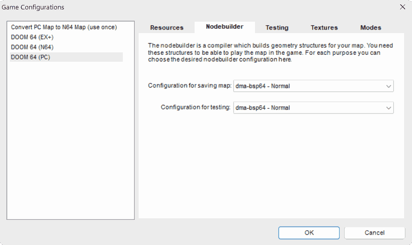

Node Builder
The node builder compiles extra lumps which improve engine speed during gameplay. These are the NODES, SEGS, SSECTORS, REJECT, and BLOCKMAP lumps. Additionally Doom 64 requires the LEAFS lump that aids in polygon rendering. These lumps save on processing as they pre-calculate values used for rendering (binary space partitioning) and gameplay logic. The default node builder which comes with Doom Builder 64 is called D64BSP. This node builder was developed by Kaiser from glBSP, which is further based on the original BSP. Diema's DMA-BSP64 add features from Zokum BSP to D64BSP which allows further manipulation of the BLOCKMAP and SIDEDEFS for extra features. Then DIM-BSP64 updates DMA-BSP64 to add additional SIDEDEFS and REJECT manipulation features.
Installation / Setup
Doom Builder 64 Enhanced comes with all of the node builders for Doom 64 that were previously mentioned. However, if you prefer to use a different map editor and you want to use one of the aforementioned node builders, you will need to download a node builder from the links above. You should have two files, nameley, a ".cfg" and a ".exe" file. Put these in the node builders folder for your map editor: for example "Doom Builder 64\Compilers\Nodebuilders" for Doom Builder 64.
To enable one of these node builders in Doom Buider 64, open the program, and in the "Tools" menu open "Game Configurations". Select the engine of your choice and then go to the "Nodebuilder" tab. Here you will have a few options for both the saving and testing configurations which will let you choose which node builder for each you would like to use. The image below shows DMA-BSP64 as an example.
After clicking "OK" you will be using the node builder of your choice.
BLOCKMAP Manipulation
The BLOCKMAP is used for collision detection during gameplay and for many Doom 64 engines it is limited to 65534 bytes in size. DMA-BSP64 and DIM-BSP64 allow the mapper to exclude chosen linedefs from BLOCKMAP calculations, allowing for larger than typical maps, and some other mapping techniques, on these engines. It has also been observed some speed increases as well as BLOCKMAP calculations are reduced.
Linedefs excluded from the BLOCKMAP will not have collisions and cannot activate actions via thing crossing. For linedefs that separate sectors of equal heights (or small height differences), no collisions are required so they can be safely excluded from the BLOCKMAP. If linedefs on the edge of the map are excluded, things and the player can exit the normal playable area. Interestingly, this technique also allows monsters to ignore high ledges, allowing them to fall off of them. However, this also allows the player to partially clip into ledges, so a second smaller ledge (also excluded from the BLOCKMAP) can be used to prevent the player from getting too close to the higher ledge.
Depending on the node builder, there are multiple ways to signify lines to be excluded from the BLOCKMAP in the map editor. The first method in both DMA-BSP64 and DIM-BSP64 is to enable both the "Never Show on Automap" and "Always Show on Automap" flag on the linedef. The "Never Show on Automap" flag takes precedence, so this linedef will be excluded from both the BLOCKMAP and the automap. On DMA-BSP64 another method is to use the negative tags on Doom Builder 64 Enhanced (tags between 32768 and 65535 on old Doom Builders) on the linedef, which will also exclude the linedef from the BLOCKMAP but it will still appear on the automap (and can be targeted by macros). As negative tags can be useful in Doom 64 actions, DIM-BSP64 adds a "No Blockmap" (0x10000000) flag to exclude a line from the blockmap but retained on the automap.
SIDEDEFS Manipulation
Each linedef of a map references a sidedef. Sidedefs are limited to 65535 in quantity, although this limit is not often reached. These contain information on the textures used, their offset, and the sector in which the sidedef faces. Not all linedefs have unique texture references and offsets, thus not every linedef needs a unique sidedef. As a post-process, the nodebuilder can reduce the number of sidedefs by having identical sidedefs reduced to a single sidedef. Then all of the linedefs are updated to point to this one. This can reduce map size automatically without any change in visuals and behavior. DMA-BSP64 and DIM-BSP64 have differing methods on excluding certain lines from sidedef compression to prevent compression issues.
DIM-BSP64 has a "Merge Sides" (0x20000000) flag which can be used to force the merger of sidedefs associated with lines of the same tag. This forced merger can allow scrolling at faster speeds and multiple switches to be activated at once. The consequence to this is everything with the same tag and this flag will have the same textures and alignment. See this example WAD to see the effects of this flag in action.
REJECT Manipulation
The REJECT lump is a table of values which speeds up line of sight calulations for monsters. It specifies which sectors are "visible" from other sectors. DIM-BSP64 adds the special 999 (Blind To Monsters) to sectors, which excludes this sector from being seen in the REJECT lump. This can be used to break a monster's line of sight from or to a sector, making them effectively blind, but they can still hear unless flagged not to (Ambush).